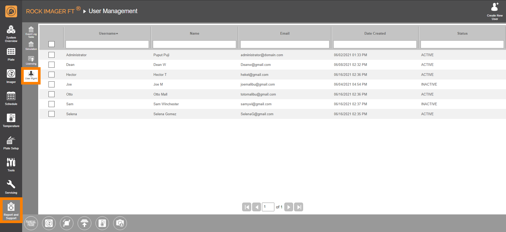
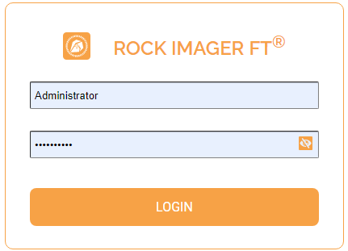
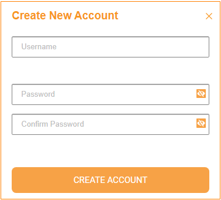
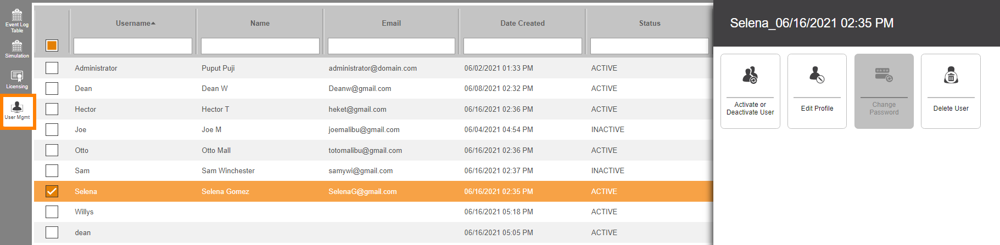

User Management¶
ROCK IMAGER FT comes with a layer of security by requiring user sign-in in order to access the software. Using the User Management tab, which you can access through the Report and Support menu, you can create new user accounts, as well as delete and manage the existing ones.
Jump to:
{kind=link}
User Management
The login dialog box will appear when you try to access the ROCK IMAGER FT software, prompting you to enter your username and password.
{kind=link}
ROCK IMAGER FT Login Dialog Box
Note
To log out, go to the System Overview menu and click Log Out, which is in the upper-right corner of the screen.
There are two types of users available: administrators and regular users. An administrator is the default kind of user and cannot be deactivated or deleted.
Adding New Users¶
To add new users:
Go to the Report and Support menu, and click User Management.
Select the Create New User icon in the upper-right corner of the screen. The Create New Account dialog box will appear, as shown below.
Create New Account Dialog Box
FIll in the Username, Password, and Confirm Password address fields. If you enter a username that’s already been taken, the system will automatically detect it. You can only set your username once.
Note
Your password must be between 6 and 20 characters, containing at least one number, one uppercase letter, and one lowercase letter.
Click Create Account when you’re done.
{kind=link}
{kind=link}
Managing Existing Users¶
To edit an existing user’s profile:
Through the User Management menu, you can modify your information and manage other users’ profiles, such as their name and email address. However, you cannot modify other users’ passwords.
In the User Management menu, select the username of interest. A command panel will appear.
User-related Command Panel
From the command panel, you can:
Click the Activate or Deactivate User button to either activate or deactivate an existing user. If a user is deactivated, they will no longer be able to log into the ROCK IMAGER FT. You can always reactivate the user at any time.
Note
If a user has been deactivated, the Status column will say Inactive.
Click the Edit Profile button to modify the current name and email address attached to the user’s profile.
Change your current password by clicking the Change Password button .
Permanently delete an existing user’s account by clicking the Delete User button . Keep in mind that this action cannot be undone.
{kind=link}
{kind=link}
{kind=link}
{kind=link}
{kind=link}